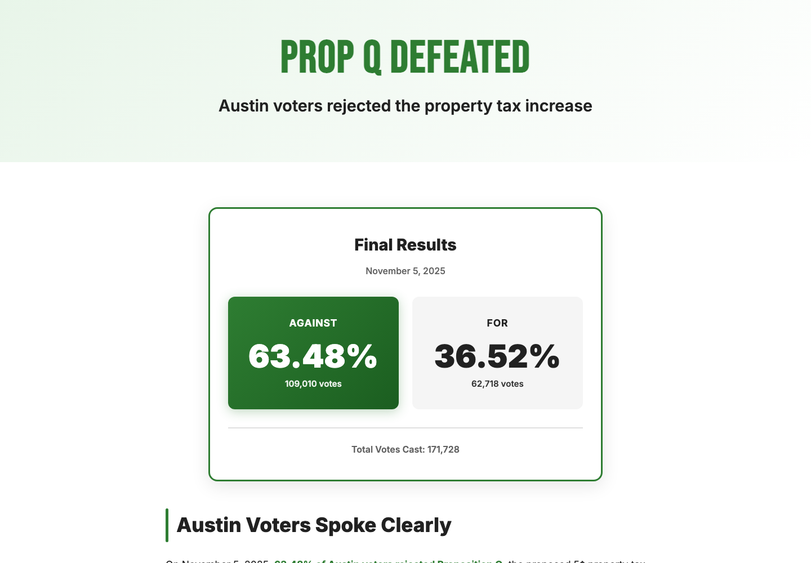

Ballot measure / Rapid response / Public data
Austin Tax Rate Election
A citizen-built public-information site that converted a complicated tax-rate election into clear numbers, shareable explanations, and a durable results record. The project became part of Austin's public debate and earned local media attention.
HOURSInitial launch
$12Original domain cost
63.48%Final against vote